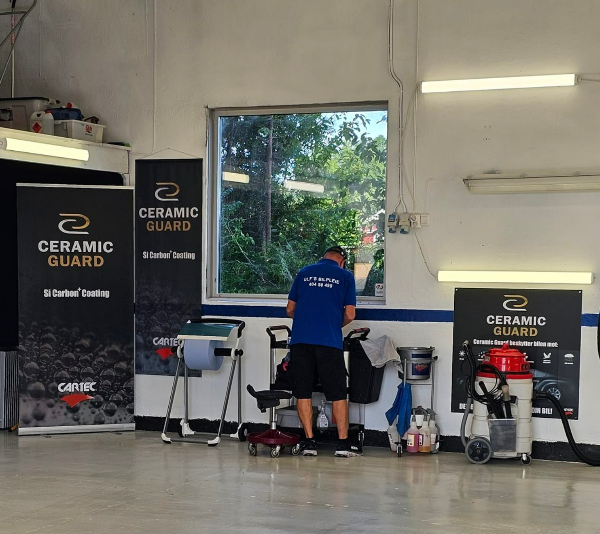

Velkommen til ULF's Bilpleie
Hos ULF's Bilpleie er vi dedikert til å gi bilen din den beste behandlingen. Med mange års erfaring i bilpleiebransjen, tilbyr vi et bredt spekter av tjenester for å holde bilen din i topp stand, både utvendig og innvendig. Vår Bilvasktjeneste: Vi tilbyr en grundig bilvask som gir bilen din et strålende utseende, uavhengig av værforholdene. Våre bilvaskpakker er skreddersydd for å møte dine behov, enten du ønsker en enkel vask eller en fullstendig behandling som inkluderer polering og voksing for å beskytte lakken din.
Hva skiller oss fra andre?
Hvorfor velge oss?
1 Vi forstår at bilen din er mer enn bare et transportmiddel – den er en investering. Derfor behandler vi hver bil som om det var vår egen, og vi streber etter å levere den beste serviceopplevelsen hver gang.